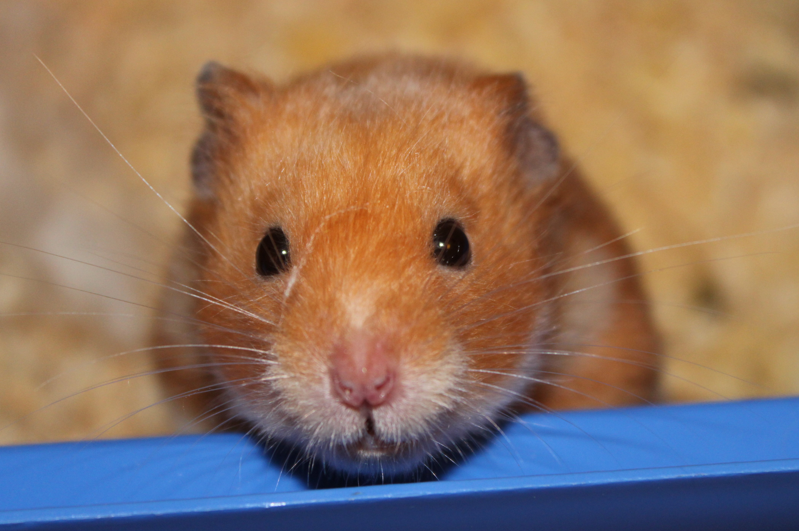

22-Oct-2017 | Milku
Everton...results...need I say any more?
I've been told that far back in history...well, 1984 may seem like yesterday to you, but is prehistoric to me...there was a young Everton manager who was on the brink of dismissal. But then...a cup game...a Kevin Brock back pass...Inchy scored...and Howard Kendall retained his job and led Everton to some great times...
But this Sunday! Even during a normal season, you might think that Everton would struggle to beat Arsenal. But, up pops Rooney and the Blues are a goal ahead! Sadly, it didn't last.
Can Koeman survive? Well, there is a cup game on Wednesday. Could this be a turning point that fans will wax lyrical about in decades to come? Are Everton on the brink of league and cup glory?
Well, that'd be nice, but I don't really expect Chelsea to make the same sort of error that led to Everton beating Oxford United in 1984...Bear in mind that stranger things have happened...so I'm not heading off to the bookies to bet on the identity of the next Everton manager just yet...
Instead, I've been contemplating Mole Day. It's a time-limited event. You should only participate in Mole Day activities between 6.02am and 6.02pm.
It's not a celebration of my animal friends. Instead, it celebrates Avogadro’s Number (6.02 x 1023), which is a basic measuring unit in chemistry. For a given molecule, one mole is a mass (in grammes) whose number is equal to the atomic mass of the molecule.
Happy Mole Day, to all you chemists out there.